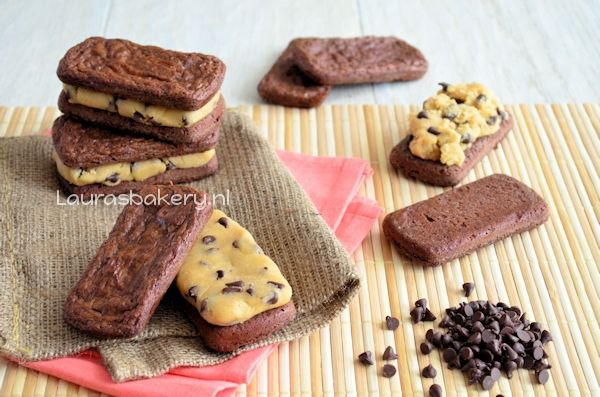

2. Brownie cookie dough sandwiches van Laura's Bakery
Inleiding
Ja daar zijn ze dan; de brownie cookie dough sandwiches! Jullie hebben ze al even kunnen zien in het bericht van de Wilton Treatwich winactie en hier is nu ook het recept. Ik besloot brownies te maken met de bakpan en deze wilde ik natuurlijk gaan vullen.
Beschrijving
Brownie cookie dough sandwiches. een machtige smaak, dus ideaal om gezellig te delen.
Ingrediënten
- 60 gram ongezouten roomboter (Campina)
- 60 gram pure chocolade
- 135 gram witte basterdsuiker
- snuf zout
- 2 tl vanille-extract
- 1 ei
- 65 gram bloem
- 10 gram cacaopoeder
Vulling
- Halve portie chocolate chip cookie dough (ongeveer)
Instructies
- Smelt de boter en pure chocolade au bain marie. Laat het mengsel ietsjes afkoelen en voeg dan de suiker toe die je er doorheen roert. Als de suiker helemaal is opgenomen voeg je het ei en de vanille extract toe. Als laatst voeg je de bloem, cacaopoeder en het snufje zout toe. Roer tot het een mooi beslag is geworden.
- Verdeel het beslag over de ingevette en bebloemde vormpjes van de Wilton Treatwich bakpan. Om het beslag makkelijk te verdelen in de vormpjes heb je twee theelepels nodig en een bakje water.
- Doop de theelepels in het bakje water en schud ze droog. Ze blijven nog iets vochtig, dat is juist goed want hierdoor blijven ze niet plakken aan het beslag. Met de bolle kanten kun je nu eenvoudig het beslag gelijkmatig verdelen in de vormpjes. Begint het iets te plakken? Maak de lepeltjes dan weer vochtig.
- Bak de brownies in 10 minuten op 180 °C (boven- en onderwarmte) gaar.
- Als de brownies zijn afgekoeld kun je ze vullen met cookie dough! Neem wat cookie dough en vorm dit zodat het mooi tussen de brownies past. Je kunt er zo veel tussen doen als je wilt natuurlijk, maar onthoud dat het echt een hele machtige snack is. Delen is dus zeker geen slecht idee. Dat zal degene waarmee je het deelt ook vinden!